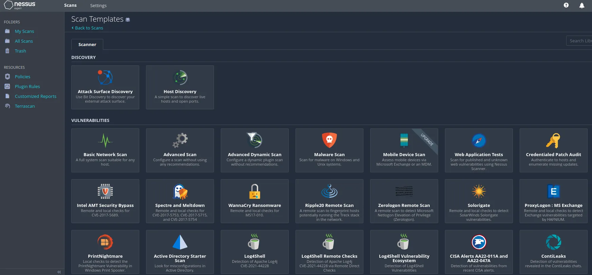
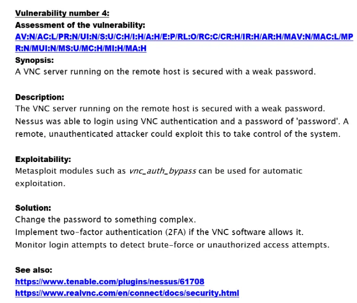
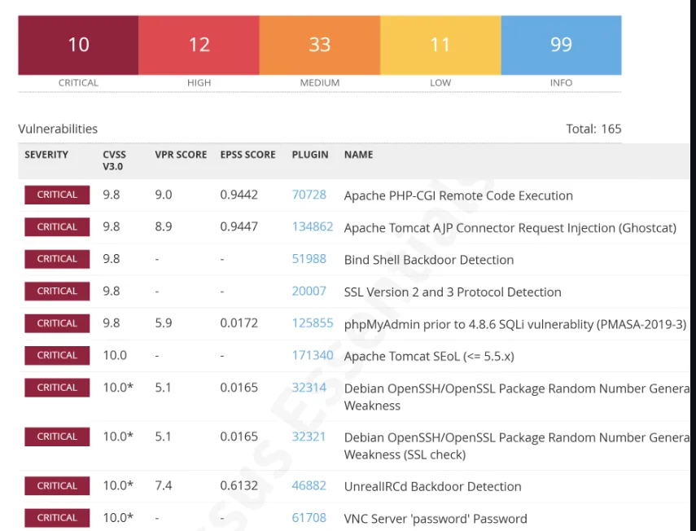

Évaluation de vulnérabilités – Metasploitable 2
Évaluation de vulnérabilités approfondie d'une machine volontairement vulnérable, réalisée dans le cadre de ma préparation à la certification Blue Team Junior Analyst.
- Cadre
- Projet personnel
- Équipe
- Individuel
- Livrable
- Rapport en anglais
- Résultat
- 242 vulnérabilités, 12 critiques
01En résumé
Objectif
Couvrir tout le cycle de vie d'une vulnérabilité : détection, évaluation, priorisation, remédiation et reporting.
Ma contribution
Scan Nessus, vérification manuelle de failles critiques, cartographie ATT&CK et rédaction d'un rapport professionnel.
Résultat
242 vulnérabilités classées par criticité, dont 12 critiques, avec une feuille de route de sécurisation.
02Le projet
Ce projet consiste en une évaluation de vulnérabilités sur Metasploitable 2, un environnement volontairement vulnérable. Les objectifs :
- Scanner la cible avec un outil standard (Nessus) pour identifier les failles.
- Analyser les résultats : priorisation par score CVSS et classification.
- Cartographier les tactiques, techniques et procédures adverses avec MITRE ATT&CK.
- Recommander des remédiations concrètes pour chaque vulnérabilité critique.
Le rapport final, disponible sur GitHub, comprend une synthèse exécutive, le détail des vulnérabilités critiques, les recommandations et des annexes.
03Démarche
- Périmètre et autorisation : définition de la cible et des règles d'engagement.
- Scan : configuration et lancement d'un scan complet avec Nessus (ports, services, applications).
- Analyse : tri par criticité (critique, élevée, moyenne, faible, informative) et scores CVSS.
- Vérification manuelle : validation de certaines failles, par exemple la backdoor UnrealIRCd, avec Metasploit.
- Cartographie ATT&CK : association de chaque vulnérabilité à des tactiques et techniques (Execution, Persistence…).
- Rapport et correctifs : mises à jour, renforcement des mots de passe, suppression des services inutiles.
04Technologies
- Nessus
- Configuration des scans et interprétation des résultats
- Metasploitable 2
- Cible volontairement vulnérable
- CVSS v3
- Calcul et interprétation des scores de sévérité
- MITRE ATT&CK
- Cartographie des TTP adverses
- Metasploit
- Validation manuelle des vulnérabilités
- Rapport technique
- Synthèse exécutive, détails, recommandations
05Galerie



06Compétences BUT mobilisées (Apprentissage Critique)
AC24.02Mettre en œuvre des outils de sécurisation
Utilisation avancée de Nessus et génération de rapports.
AC24.03Sécuriser les services
Analyse des services exposés (IRC, Apache, VNC, SSH, phpMyAdmin) et recommandations de durcissement.
AC24.06Comprendre des documents techniques en anglais
Rapport rédigé intégralement en anglais, consultation des CVE et avis de sécurité.
07Bilan
Ce que j'en retiens
Configurer et interpréter un scanner de vulnérabilités, prioriser les risques selon le contexte (criticité, exploitabilité, impact), utiliser MITRE ATT&CK pour comprendre le comportement des attaquants et formuler des recommandations actionnables.
Avec du recul
J'aurais pu valider davantage de vulnérabilités par des tests d'exploitation manuels, notamment celles au score élevé.